2048 strikes back
Sildes and code available in github:
WHOAMI
- Marc Egea i Sala (github.com/meis)
- Barcelona.pm
- Soysuper.com
Talk rules
- Doubts
- Funny comments
- I'm talking to fast
- It's all wrong! you're so stupid
- There's another module to do it
- Fool me in general
2048: The game
from Gabriele Cirulli > 1024 > Threes
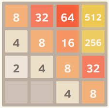
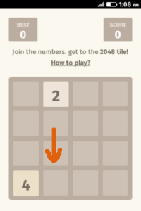
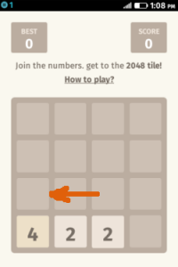
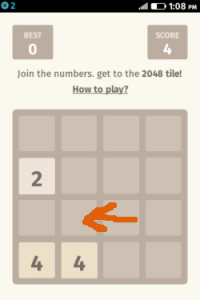
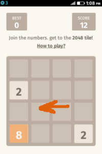
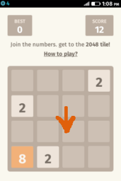
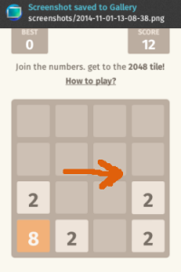
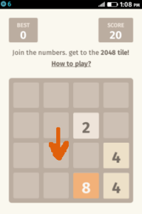
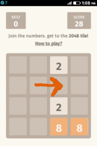
Thanks to Desde FirefoxOS
Last episode
A dumb way to implement it- Talk in Granada Perl Workshop 2014
- Beat the game using as much CPAN as possible
- Engine for the Games::2048 Module
- Using minimax
- Evaluate the state of a board
The plan
Dumbest wat to implement it?- Survive is not the best strategy, but's good one
- I tried the path of Enlighntment
- Let's try the path of void
Randomness!
2000 plays per directionAlgorithm
best_move (@board):
$scores;
for $dir (qw/left right up down/) {
for (0..2000) {
while (not_lost) {
add_random_tile;
random_player_move;
$score{$dir}++;
}
}
}
get_best_score
}
Shift rows
- Move left = shift row (0..3)
- Move up = up row (0..3)
- ...
- Move up = rotate + Move left + rotate
Got it!
- "Compiles"
- Run
- Survives for hours
- I'm done!
- Wait..does it win?
I don't know!
FAIL
The talk starts here
What do we want?
- Winning Algorithm (~80%)
- In human time
When do we want it?
NOW!!
Let's go!
Profiling
WikipediaIn software engineering, profiling ("program profiling", "software profiling") is a form of dynamic program analysis that measures, for example, the space (memory) or time complexity of a program, the usage of particular instructions, or the frequency and duration of function calls. Most commonly, profiling information serves to aid program optimization.
Devel::NYTProf
# profile code and write database to ./nytprof.out
perl -d:NYTProf some_perl.pl
# convert database into a set of html files, e.g., ./nytprof/index.html
# and open a web browser on the nytprof/index.html file
nytprofhtml --open
# or into comma separated files, e.g., ./nytprof/*.csv
nytprofcsv
NYTProf in my code
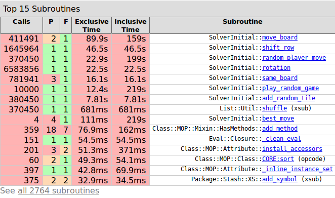NYTProf shift_row (s'executa més vegades)
Few changes in shift_row
Let's try!
FAIL
Tests!
Shift_row tests
use Test::More;
subtest 'Shift row' => sub {
ok( join('', $game->shift_row(1,1,0,0)) eq '2000', '1100 -> 2000');
ok( join('', $game->shift_row(0,0,0,1)) eq '1000', '0001 -> 1000');
ok( join('', $game->shift_row(0,3,0,3)) eq '4000', '0303 -> 4000');
ok( join('', $game->shift_row(3,2,0,2)) eq '3300', '3202 -> 3300');
ok( join('', $game->shift_row(0,0,0,0)) eq '0000', '0000 -> 0000');
ok( join('', $game->shift_row(1,0,0,0)) eq '1000', '1000 -> 1000');
ok( join('', $game->shift_row(1,2,3,4)) eq '1234', '1234 -> 1234');
ok( join('', $game->shift_row(1,2,1,2)) eq '1212', '1212 -> 1212');
ok( join('', $game->shift_row(1,2,2,1)) eq '1310', '1221 -> 1310');
};
It works!
HOW MUCH BETTER??
Profiling doesn't helpBenchmark
WikipediaIn computing, a benchmark is the act of running a computer program, a set of programs, or other operations, in order to assess the relative performance of an object, normally by running a number of standard tests and trials against it. The term 'benchmark' is also mostly utilized for the purposes of elaborately-designed benchmarking programs themselves.
(micro) Benchmarking is hard
Benchmark module
use Benchmark qw(:all) ;
timethis ($count, "code");
# Use Perl code in strings...
timethese($count, {
'Name1' => '...code1...',
'Name2' => '...codede2...',
});
Benchmark shift_row
$ script/compare_shifts.pl
Rate original modified
original 94339/s -- -56%
modified 212764/s 126% --
Benchmark complete
$ script/compare_solvers.pl SolverInitial SolverFasterShift
s/iter SolverInitial SolverFasterShift
SolverInitial 12.7 -- -24%
SolverFasterShift 9.68 32% --
Win!
NYTProf mode_board
Original move_board
sub move_board {
my ( $self, $direction, @board ) = @_;
my @new;
my $idx = 0;
for (0..3) {
my @r = (
$self->rotation->[$direction][$idx++],
$self->rotation->[$direction][$idx++],
$self->rotation->[$direction][$idx++],
$self->rotation->[$direction][$idx++]
);
( $new[$r[0]], $new[$r[1]], $new[$r[2]], $new[$r[3]] ) =
$self->shift_row($board[$r[0]], $board[$r[1]], $board[$r[2]], $board[$r[3]] );
}
return @new;
}
Modified move_board
sub move_board {
my ( $self, $direction, @board ) = @_;
my @new;
my ($p0,$p1,$p2,$p3);
my $r = $self->rotation->[$direction];
my $idx = 0;
for (0..3) {
$p0 = $r->[$idx++];
$p1 = $r->[$idx++];
$p2 = $r->[$idx++];
$p3 = $r->[$idx++];
($new[$p0], $new[$p1], $new[$p2], $new[$p3] ) =
$self->shift_row($board[$p0], $board[$p1], $board[$p2], $board[$p3] );
}
return @new;
}
Benchmark it
$ script/compare_solvers.pl SolverInitial SolverFasterMoveBoard
s/iter SolverInitial SolverFasterMoveBoard
SolverInitial 13.4 -- -11%
SolverFasterMoveBoard 11.9 13% --
Function called many times?
Memoize is calling
With Memoize
package SolverMemoizeShiftRow;
..
use Memoize;
memoize 'shift_row';
package SolverMemoizeMoveBoard;
..
use Memoize;
memoize 'move_board';
package SolverMemoize2;
..
use Memoize;
memoize 'move_board';
memoize 'shift_row';
Benchmark it
$ script/compare_solvers.pl SolverInitial SolverMemoizeMoveBoard SolverMemoizeShiftRow SolverMemoize2
s/iter SolverMemoizeMoveBoard SolverMemoize2 SolverMemoizeShiftRow SolverInitial
SolverMemoizeMoveBoard 19.8 -- -12% -23% -32%
SolverMemoize2 17.4 14% -- -12% -22%
SolverMemoizeShiftRow 15.4 29% 13% -- -12%
SolverInitial 13.5 47% 29% 14% --
FAIL
Memoize is for expensive methods
Sub calls are expensive
Tiny methods
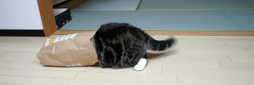
Where are you?
Moose accessors
From:
has 'rotation' => (
is => 'ro',
default => sub {[
#left
[ 0,1,2,3,4,5,6,7,8,9,10,11,12,13,14,15 ],
#right
[ 3,2,1,0,7,6,5,4,11,10,9,8,15,14,13,12 ],
#up
[ 0,4,8,12,1,5,9,13,2,6,10,14,3,7,11,15 ],
#down
[ 12,8,4,0,13,9,5,1,14,10,6,2,15,11,7,3 ],
]},
);
...
$self->rotation->[$direction][$idx++]
To:
my $rotation = [
#left
[ 0,1,2,3,4,5,6,7,8,9,10,11,12,13,14,15 ],
#right
[ 3,2,1,0,7,6,5,4,11,10,9,8,15,14,13,12 ],
#up
[ 0,4,8,12,1,5,9,13,2,6,10,14,3,7,11,15 ],
#down
[ 12,8,4,0,13,9,5,1,14,10,6,2,15,11,7,3 ],
];
...
$rotation->[$direction][$idx++]
Benchmark it
$ script/compare_solvers.pl SolverInitial SolverWithoutMoose
s/iter SolverInitial SolverWithoutMoose
SolverInitial 12.7 -- -13%
SolverWithoutMoose 11.0 15% --
WIN
Sub calls are expensive
What if?
From:
sub move_board {
...
for (x) {
$self->shift_row(@array);
}
...
}
sub shift_row {
...
shift_row_stuff;
...
}
To:
sub move_board {
...
for (x) {
shift_row_stuff;
}
...
}
Benchmark it
$ script/compare_solvers.pl SolverInitial SolverLessMethods
s/iter SolverInitial SolverLessMethods
SolverInitial 13.3 -- -41%
SolverLessMethods 7.85 69% --
WIN
Control slide
We are improving... but
Parallelization
Module
Parallel::ForkManager
Forking
my %scores = ();
my $pm = Parallel::ForkManager->new(4 * $self->forks_x_dir);
for (1..$self->forks_x_dir) {
for my $direction (0,1,2,3) {
my @moved_board = $self->move_board($direction, @board);
if ( !$self->same_board(@moved_board, @board) ) {
$pm->start and next;
srand(time + $direction);
my $score;
for (1..($self->moves/$self->forks_x_dir)) {
$score += $self->play_random_game(@moved_board);
}
$pm->finish(0, \[$direction, $score]);
}
}
}
$pm->wait_all_children;
Receiving data
$pm->run_on_finish (
sub {
my ($pid, $code, $ident, $signal, $cd, $data_structure_reference) = @_;
if (defined($data_structure_reference)) {
$scores{${$data_structure_reference}->[0]} += ${$data_structure_reference}->[1];
}
}
);
Forks > 4
Benchmark it
src$ script/compare_solvers.pl SolverInitial SolverParallelMulti
s/iter SolverParallelMulti SolverInitial
SolverParallelMulti 19.7 -- -35%
SolverInitial 12.8 54% --
Benchmarking is hard!
Do your best to Benchmark it
4 cores:
$ time CLASS=SolverInitial script/various_moves.pl
real 0m49.875s
user 0m49.848s
sys 0m0.000s
$ time CLASS=SolverParallelMulti script/various_moves.pl
real 0m24.267s
user 1m25.400s
sys 0m0.092s
8 cores:
$ time CLASS=SolverInitial script/various_moves.pl
real 0m39.925s
user 0m39.904s
sys 0m0.012s
$ time CLASS=SolverParallelMulti script/various_moves.pl
real 0m12.012s25s
user 0m52.049s
sys 0m0.128s
Win!
When to stop?
Summarizing
- Reduce the number of methods
- Avoid moose accessors
- Less array munging, less calls
- Parallelize
All together?
Benchmark it
src$ time CLASS=SolverInitial script/various_moves.pl
real 0m39.013s
user 0m38.013s969s
sys 0m0.024s
$ time CLASSS=Solver script/various_moves.pl
real 0m4.860s
user 0m20.046s
sys 0m0.113s
marc@z1:~/work/talks/2048-strikes-back/src$
Does it work?
YES
Does it win?
YES
Stats
Or the worst lies- Win ratio: ~80%
- Time to win: ~15m
- Avg move: 1s
- Best piece: 2048
Also..
4x time boost!
Win!
I would have
- Custom Memoize
- GOTO
- More Perl Black Magic
- Perl6?
Conclusions
For performance improvement- Do code! 1/0 improve
- Profile
- Test your code (should be first?)
- Benchmark changes
- Profit!
Pro tips for talks
- Take time to prepare the talk
- (Some people say if you finish the talk more than an our early you're doing it wrong)
- If you don't have time use all the gifs you can!
THANKS!
- It's all wrong! you're so stupid
- There's another module to do it
- Fool me in general
Questions?